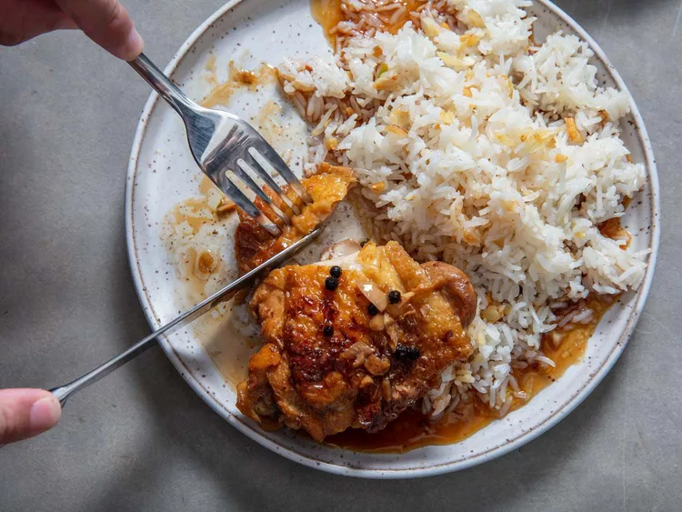

Filipino Chicken Adobo

Description
Chicken adobo is a classic Filipino dish made by braising chicken in a mixture of soy sauce, vinegar, garlic, peppercorns, and served with steamed white rice.
Ingredients
- Enough neutral oil to coat the bottom of a pot or dutch oven (canola or vegetable oil works, I sometimes use avocado oil)
- 4 bone-in, skin-on chicken legs, separated into thighs and drumsticks
- Kosher Salt
- 8 cloves of garlic
- 3 dried bay leaves
- 2 teaspoons of whole black peppercorns
- 1 1/4 cups of water
- 1 cup of soy sauce
- 1 cup of rice vinegar
- Steamed white rice for serving
Directions
- In a heavy bottomed pot or dutch oven, heat oil over medium heat until shimmering. Season chicken lightly with salt.
- Working in batches if necessary, add chicken to the pot skin side down. Cook until well browned. Flip chicken and cook until well browned on the other side. Transfer chicken to a plate and set aside.
- Add garlic, bay leaves, and peppercorns to the pot and cook, stirring constantly until fragrant and garlic starts to change color (About 30 seconds to a minute).
- Add water and stir with a wooden spoon, scraping up any brown bits on the bottom of the pot. Add soy sauce and vinegar, return chicken to the pot, increase heat to high, and bring liquid to a boil. Reduce heat to low, cover, and simmer until chicken is cooked through and tender, about 20 minutes. Turn the chicken halfway through.
- Serve chicken with steamed white rice. Broil the chicken skin side up in the oven if crispy skin is desired.